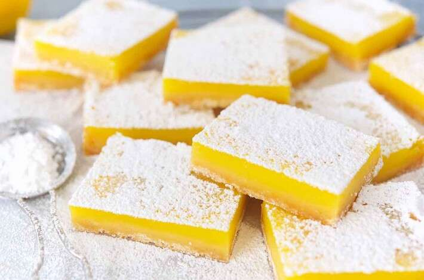

Lemon Squares

Description
A refreshingly sour treat for anytime. Yields 16 bars.
Ingredients
Crust
- 120g all-purpose flour
- 1/4 teaspoon salt
- 28g confectioners’ sugar
- 113g unsalted butter, room temperature
Topping
- 4 large eggs
- 1 large egg yolk
- 223g of granulated sugar, divided into 1 cup and 2 tablespoons
- 21g of confectioners’ sugar
- 30g all-purpose flour
- 1/8 teaspoon salt
- 152g lemon juice
- confectioners’ sugar, for topping
Steps
- Preheat the oven to 350 degrees F
- To make the crust: Whisk together the flour, salt, and confectioners’ sugar. Work in the butter until it's evenly distributed; the mixture will be crumbly. Press the crust firmly into a parchment lined 8 inch square pan. If the mixture begins to stick to your hands, chill in the freezer for 5 to 10 minutes, then continue to press into the pan. It’s important that the crust is firmly anchored to the pan so no filling seeps underneath.
- Bake the crust for 30 to 35 minutes, or until it’s golden brown. Remove it from the oven, and reduce the oven temperature to 325 degrees F.
- While the crust is baking, make the topping: Combine the whole eggs, egg yolk, and sugars and whisk until smooth. Add the flour and salt, then the lemon juice, and whisk until thoroughly combined.
- Let the filling sit for 15 minutes or so, until the bubbles (mostly) disappear.
- While the baked crust is still hot, pour the topping over it. Return the bars to the oven and bake until they appear set and relatively dry on top, about 30 minutes.
- Remove the bars from the oven, and cool them on a rack. Let them cool completely before slicing. Just before serving, sprinkle the top of the bars with confectioners' sugar.
- Store any leftovers in the refrigerator for up to several (3 to 4) days.
Notes
For an extra hit of lemon flavor, stir the finely grated rind of 1 lemon into the crust dough before baking.